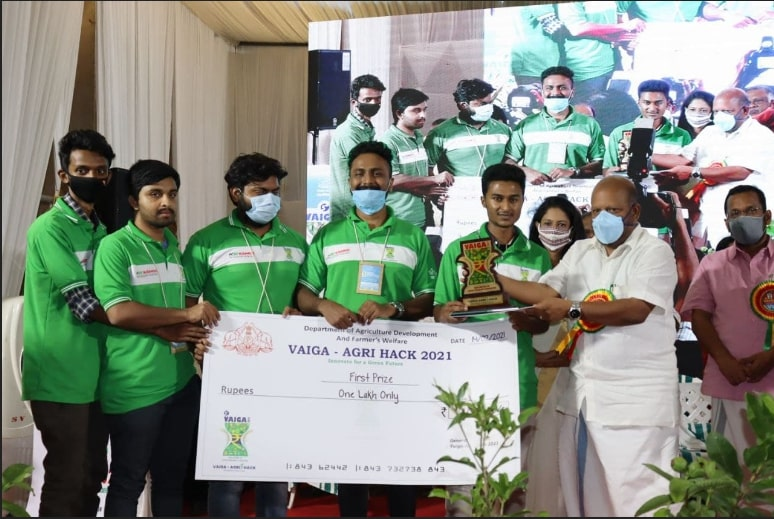
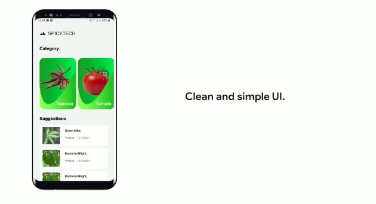
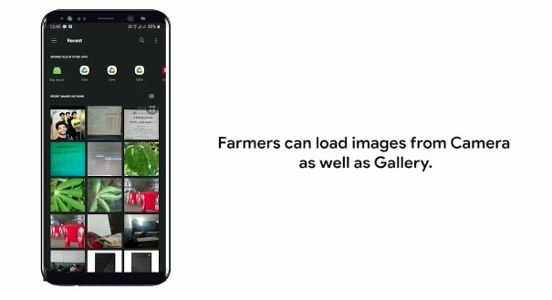
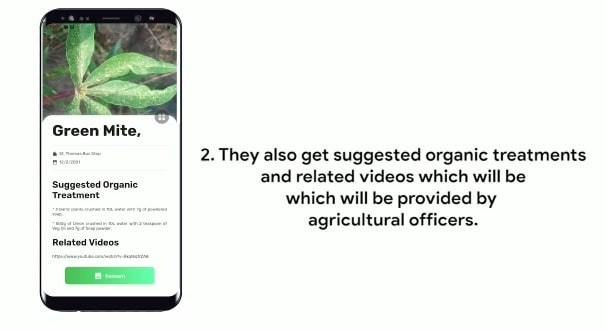
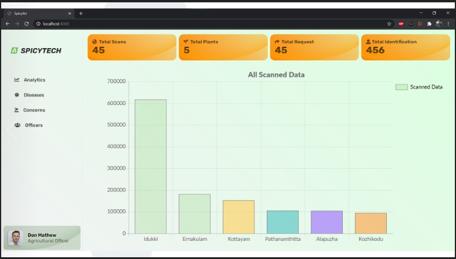
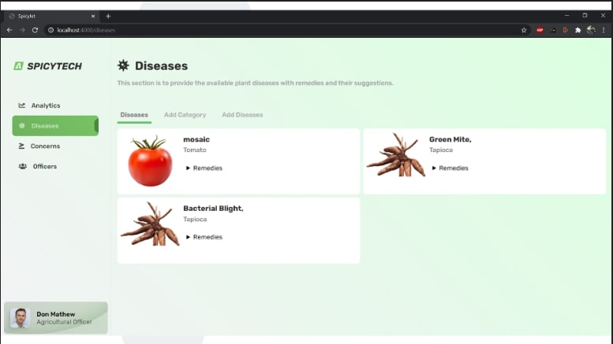
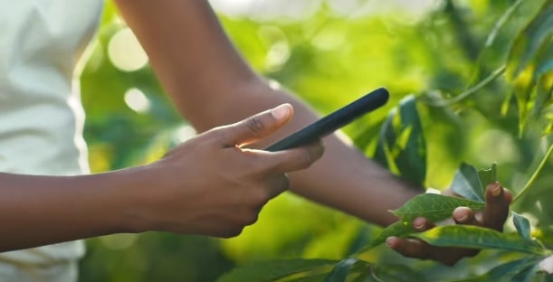
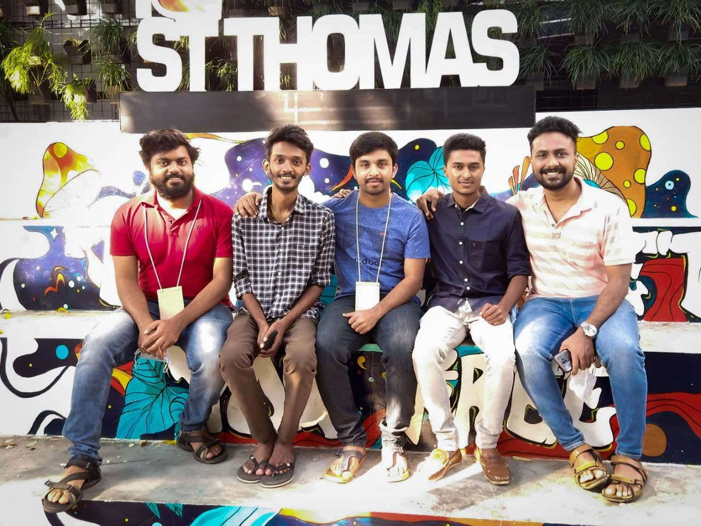

An AI powered App for detection of plant diseases and give remedies to farmers
VAIGA AGRI HACK 2021 TITLE WINNING MOBILE APPLICATION
About Vaiga Agri Hackathon
VAIGA Agri Hack 2021 is Kerala’s largest agricultural hackathon conducted by the Government of Kerala Agricultural department, as a part of the VAIGA Agricultural Fest, participating school-college students, startups, individuals, farmers, innovationists and general public.
Plant Disease Detection Mobile Application By Team SPICYTECH
As part of hackathon our team build a ML powered Android app and a website in 36 hrs, which helps both agriculture department and farmer to identify diseases in spices and give remedies.

2021 Vaiga Agri Hackathon Prize Distribution SpicyTech Team (Marian College 2019-21 MCA Batch)
Receiving ₹1 Lakh prize and momentum from Honourable Kerala State Agriculture Minister V. S. Sunil Kumar. Team Members: Don Mathew, Allwin Baby, Kamal EJ, Tojo Team Leader: Alex Varghese Starting from left side
MOBILE APP
This mobile Application helps farmers to scan plants and detect diseases and pest using Machine Learning. This Ai powered app instantly gives remedies and medicines for detected disease. If farmer have any concern, they can acknowledge agriculture officers through this app.



WEB SITE
To manage queries there is a dedicated website built for agricultural department


TECHNOLOGIES USED
Flutter Mobile App
Nodejs for Website Backend
TensorFlow and keras for Machine Learning
Heroku for deployment
Firebase for storage
Flask for ML API
Artificial Intelligence
Due to lack of image datasets for native plants of Kerala we collected image-dataset on our own.
The AI model is created using a technique called Transfer Learning by InceptionV3 neural network.

Our Team

Team Members: Kamal, Don, Allwin, Alex, and Tojo at St. Thomas College, Thrissur, the venue of Vaiga 2021. Starting from the left side